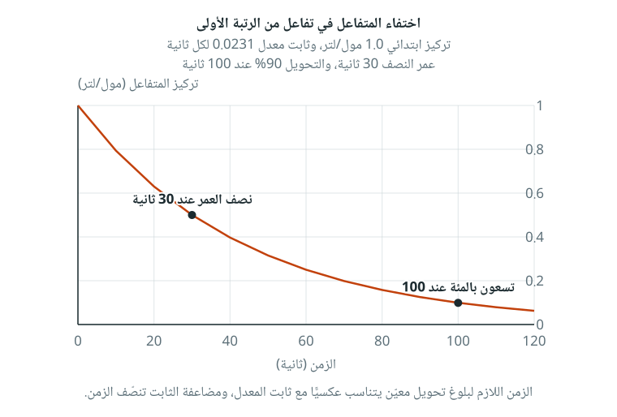

سرعة التفاعل
Reaction Rate
تغيّر تركيز متفاعل أو ناتج في وحدة الزمن، تُقاس تجريبيًّا وتُربط بالتراكيز عبر قانون المعدل ورتبته، ولا تُستنتج من المعادلة الموزونة وحدها.
سرعة التفاعل مقدار تغيّر تركيز نوع كيميائي في وحدة الزمن، وتُقاس بوحدة مول لكل لتر في الثانية في المحاليل. لكل متفاعل سرعة اختفاء ولكل ناتج سرعة ظهور، ويجمعها المعامل المتكافئ: سرعة التفاعل واحدة، بينما تختلف السرعات المفردة بحسب المعاملات.
العلاقة بين السرعة والتراكيز تُسمّى قانون المعدل، وهي علاقة تجريبية لا تُقرأ من المعادلة الكيميائية. يأخذ القانون الصورة rate = k·[A]^m·[B]^n، حيث k ثابت المعدل وm وn رتبتا التفاعل بالنسبة لكل نوع. مجموع الأسس هو الرتبة الكلية، وقد تكون كسرية أو صفرية، وهذا وحده يكفي لإبطال أي استنتاج مباشر من المعاملات.
تُقاس السرعة بمراقبة خاصية تتناسب مع التركيز: امتصاص ضوئي، ضغط، موصلية، أو حجم غاز. تُشتق المنحنيات التجريبية ثم تُقارن بقوانين المعدل المتكاملة: خط مستقيم بين لوغاريتم التركيز والزمن يعني رتبة أولى، وخط بين مقلوب التركيز والزمن يعني رتبة ثانية.
الآلية
كيف يحدث الأمر على مستوى الجسيمات أو المتغيّرات المباشرة
تسير السرعة على سلسلة شروط متتابعة: أولًا يجب أن يتصادم الجزيئان، ويكون معدل التصادم متناسبًا مع التركيزين. ثانيًا يجب أن تحمل طاقة التصادم ما يكفي لاجتياز حاجز التنشيط، وهذه النسبة دالة أسّية في درجة الحرارة. ثالثًا يجب أن يكون اتجاه التصادم مناسبًا هندسيًّا، ويُختصر ذلك بمعامل ستيري. تتحدد السرعة المقيسة بمحصلة الشروط الثلاثة، ولهذا يتغيّر قانون المعدل مع تغيّر الميكانيزم لا مع تغيّر المعادلة الإجمالية، ولذلك قد يبدو الأسّ غير منطقي بالنسبة للمعاملات الموزونة.
الأرقام والوحدات
العلاقات والوحدات والنطاقات العددية التي تسند الشرح
في تفاعل من الرتبة الأولى يكون [A] = [A]₀·exp(−k·t)، وعمر النصف t½ = ln2/k. عند k = 0.0231 s⁻¹ يصبح عمر النصف 30.0 ثانية، والزمن اللازم لتحويل 90% هو ln10/k = 99.7 ثانية، أي 3.32 عمر نصف. حساسية السرعة للحرارة تُقاس بأرهينيوس: عند E_a = 50 kJ/mol و300 K يتضاعف المعدل 1.91 مرة لكل ارتفاع 10 كلفن، ولهذا تُضبط حرارة المفاعلات بدقة أعلى من دقة التراكيز في كثير من العمليات.
الفرق الدقيق
المفهوم الملتبس الذي يُخلَط به، وأين ينفصلان
الخلط الأول بين السرعة وثابت المعدل: السرعة تتغيّر مع التركيز، وk لا يتغيّر إلا مع الحرارة والحفاز. الثاني بين رتبة التفاعل والمعامل المتكافئ: الرتبة تُقاس ولا تُكتب من المعادلة. الثالث بين السرعة المتوسطة والسرعة الآنية: الأولى فرق تركيز على فترة، والثانية ميل المماس عند لحظة، وهما يتساويان فقط في الرتبة صفر. الرابع أن «سرعة اختفاء المتفاعل» ليست بالضرورة «سرعة التفاعل»: متفاعل بمعامل 2 يختفي بسرعة ضعف سرعة التفاعل نفسها.
حدود التعريف
أين ينكسر التعريف أو النموذج وما الذي لا يفسّره
قانون المعدل علاقة تجريبية تصلح عند الشروط التي قيست فيها؛ قد يتغيّر شكله عند تحوّل الميكانيزم مع الحرارة أو مع التركيز، فيبدو التفاعل من رتبة أولى في مدى ومن رتبة ثانية في مدى آخر. وفي التفاعلات غير المتجانسة تكون السرعة محدودة بمساحة السطح أو بانتقال الكتلة، فلا يعبّر قانون المعدل عن كيمياء السطح بل عن مقاومة النقل. وفي التفاعلات الضوئية تكون السرعة دالة لشدة الإشعاع لا للتركيز وحده. وقرب التوازن يقترب المعدل الصافي من الصفر لأن الاتجاهين يتعادلان، فيفقد التعريف معناه التمييزي.

| الكمية | القيمة | المصدر |
|---|---|---|
| عمر النصف عند k = 0.0231 s⁻¹ | 30.0 ثانية | [2] |
| الزمن اللازم لتحويل 90% عند k = 0.0231 s⁻¹ | 99.7 ثانية | [2] |
| ارتفاع المعدل لكل 10 كلفن عند E_a = 50 kJ/mol و300 K | 1.91 مرة | [3] |
| ثابت الغازات العام R | 8.314462618 جول/(مول·كلفن) | [3] |
المصادر
- 1 Chemistry 2e — 12.3 Rate Laws — OpenStax, Rice University. openstax.org/books/chemistry-2e/pages/12-3-rate-laws · اطُّلع عليه 2026-11-16
- 2 Chemistry 2e — 12.4 Integrated Rate Laws — OpenStax, Rice University. openstax.org/books/chemistry-2e/pages/12-4-integrated-rate-laws · اطُّلع عليه 2026-11-16
- 3 CODATA Value: molar gas constant — NIST, Fundamental Physical Constants. physics.nist.gov/cgi-bin/cuu/Value?r · اطُّلع عليه 2026-11-16
استشهد بهذا المصطلح
الصيغتان مبنيتان من بيانات الصفحة نفسها: العنوان والتاريخ ورابط النسخة المنشورة.
سرعة التفاعل — Reaction Rate. (2026). ديوان المعرفة — انفراد. https://infiradev.com/diwan/terms/reaction-rate.html
@misc{reaction-rate2026,
title = {سرعة التفاعل},
titleaddon = {Reaction Rate},
howpublished = {{ديوان المعرفة — انفراد} — مرجع علمي عربي},
year = {2026},
url = {https://infiradev.com/diwan/terms/reaction-rate.html},
urldate = {2026-11-16},
note = {مراجعة علمية: مراجعة آلية — ديوان المعرفة (روابط المصادر + عقد المحتوى + وجود الرسم) 2026-11-16}
}
راجعه: مراجعة آلية — ديوان المعرفة (روابط المصادر + عقد المحتوى + وجود الرسم) 2026-11-16 · 2026-11-16 · آخر تحديث 2026-11-16